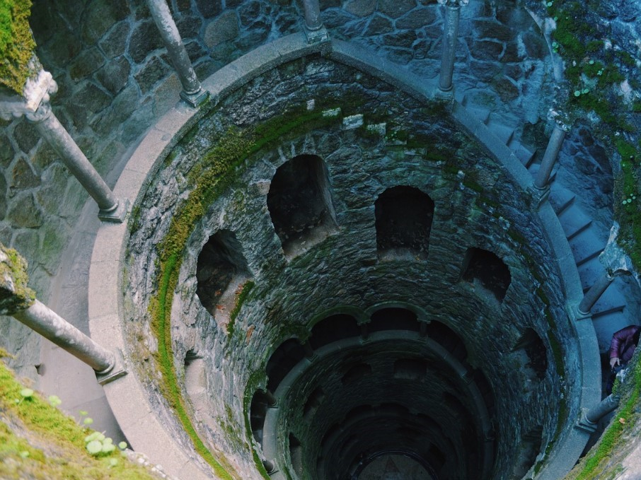

Places
Torre de Belém
A symbol of maritime Lisbon, this Byzantine and Gothic tower stands out over the mouth of the Tejo, guarding the entrance to the city’s harbour. The tower is filled with intricate stonework and has wide Atlantic views.
Alfama
Wonderful sights delight walkers at every turn in this culturally rich and charming part of Lisbon, which through its architecture reminds visitors of its Visigothic roots, Arabic influence and fishing port heritage.
Sintra
The aristocratic hill town to the west of the city is a Neverland of fairytale palaces, manicured floral gardens and wild woodlands.
